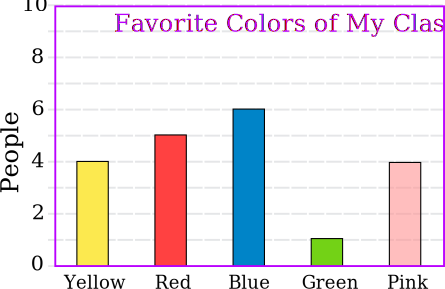

How to Do a Survey

Survey Says ...
Turn on the television, radio or open a newspaper and you will often see the results from a survey.
- Gathering information is an important way to help people make decisions about topics of interest.
- Surveys can help decide what needs changing, where money should be spent, what products to buy, what problems there might be, or lots of other questions you may have at any time.
- The best part about surveys is that they can be used to answer any question about any topic.
You can survey people (through questionnaires, opinion polls, etc) or things (like pollution levels in a river, or traffic flow).
Four Steps
Here are four steps to a successful survey:
- Step one: create the questions
- Step two: ask the questions
- Step three: tally the results
- Step four: present the results
Let us look at those steps in more detail ...
Step One: Create the Questions
The first thing is to decide is
What questions do you want answered?
 |
Sometimes these may be simple questions like:
Other times the questions may be quite complex such as:
|
Simple Surveys
When doing a simple survey, you can use tally marks to show each person’s answer:

Sometimes, it is helpful to be creative in how the people can respond. It makes it more fun for both you and your respondents (the people answering the question).
Example:What is your favorite color?
Have them write down their favorite color on a piece of paper and drop it in a fish bowl.
Then, put all of the pieces of paper into piles and count them.
To help you make a good Questionnaire read our page Survey Questions.
Step Two: Asking The Questions
Now you have your questions, go out and ask them! But who to ask?
If you survey a small group you can ask everybody (called a Census)
If you want to survey a large group, you may not be able to ask everybody so you should ask a sample of the population (called a Sample)
When you are sampling you should be careful who you ask.

To be a good sample, each person should be chosen randomly
| And the surveys where people are asked to respond are not very accurate, because only certain types of people take the time to answer. |
So be careful not to bias your survey. Try to choose randomly.
Example: You want to know the favorite colors for people at your school, but don't have the time to ask everyone.
Solution: Choose 50 people at random:
- stand at the gate and choose "the next person to arrive" each time
- or choose people randomly from a list and then go and find them!
- or you could choose every 5th person
Your results will hopefully be nearly as good as if you asked everyone.
If you choose a person and they do not want to answer, record "no answer" on the survey form and mention how many people did not answer in your report.
After completing a sampling survey you can use the information to make a prediction as to how the rest of the population might respond.
And your results are better when you ask more people.
Example: nationwide opinion polls survey up to 2,000 people, and the results are nearly as good (within about 1%) as asking everyone.
But they sometimes get voting wrong, because people change their mind when actually voting.
In the same way the opinion "yes I would buy this product" may not mean they actually will buy it.
Step Three: Tally the Results
Now you have finished asking questions it is time to tally the results.
By "tally" I mean add up. This usually involves lots of paperwork and computer work (spreadsheets are useful!)
Example: For "favorite colors of my class" you can simply write tally marks like this (every fifth mark crosses the previous 4 marks, so you can easily see groups of 5):
Step Four: Presenting the Results
Now you have your results, you will want to show them to other people in the best possible way.
We have written a special page called Showing the Results of a Survey, but here is a quick summary:
Tables
Sometimes, you can simply report the information in a table.
A table is a very simple way to show others the results. A table should have a title, so those looking at it understand what results the table shows:
| Table: The Favorite Colors of My Class | ||||
| Yellow | Red | Blue | Green | Pink |
|---|---|---|---|---|
| 4 | 5 | 6 | 1 | 4 |
Statistics
You can also summarize the results using statistics, such as mean or standard deviation
Example: you have lots of information about how long it takes people to get to school but it may be simpler just to present a summary such as:
Shortest Journey: 3 minutes
Average Journey: 22 minutes
Longest Journey: 58 minutes
Graphs
But nothing makes a report look better than a nice graph or chart.
Use Data Graphs (Bar, Line and Pie) to make them.
Example Survey Question: What is your favorite color?

Have fun asking questions!!!!!